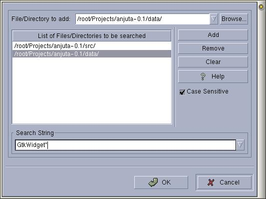

|
|
Anjuta Manual version 0.1Copyright (c) Kh. Naba Kumar Singh |
| Contents | Index | Shortcuts |
| PREV: Searching and replacing text in files | UP: File Operations | NEXT: Special Operations on files |
Remember directory entries are searched recursively. That is all the files under this directory and the files under all the sub-directories and the files under all the sub-sub-directories .... and so on .... are all included in the searched.
If you want to remove or edit an entry in the list, select it by clicking on the item. Click Remove or make changes in the entry box and click Update
Clicking Clear will clear all the entries.
Enter the text you want to search and specify if the search is case sensitive.
Click OK to start searching.
The search results will be listed in the message window. Double clicking on them will take you to that file and that particular line number where the match has been found. The matching line is also hi-lited.
